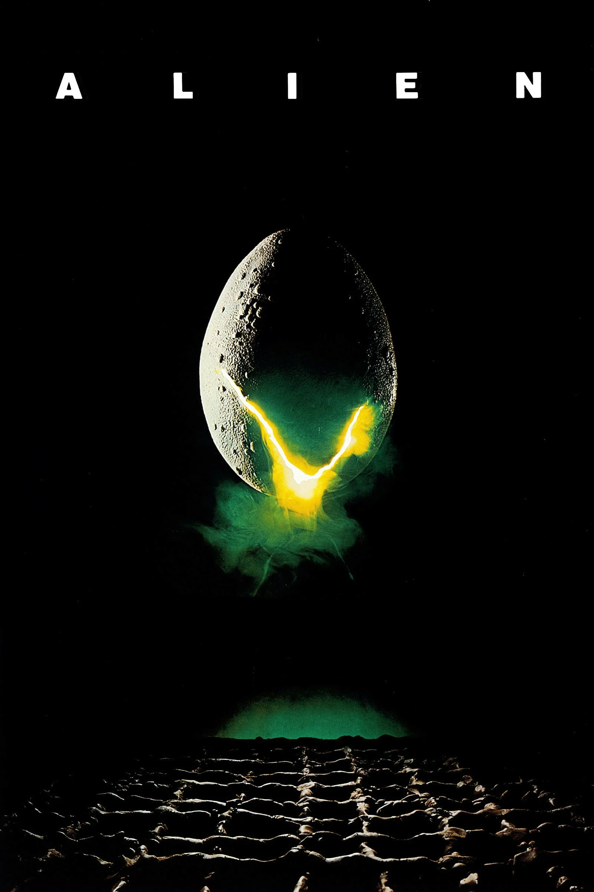
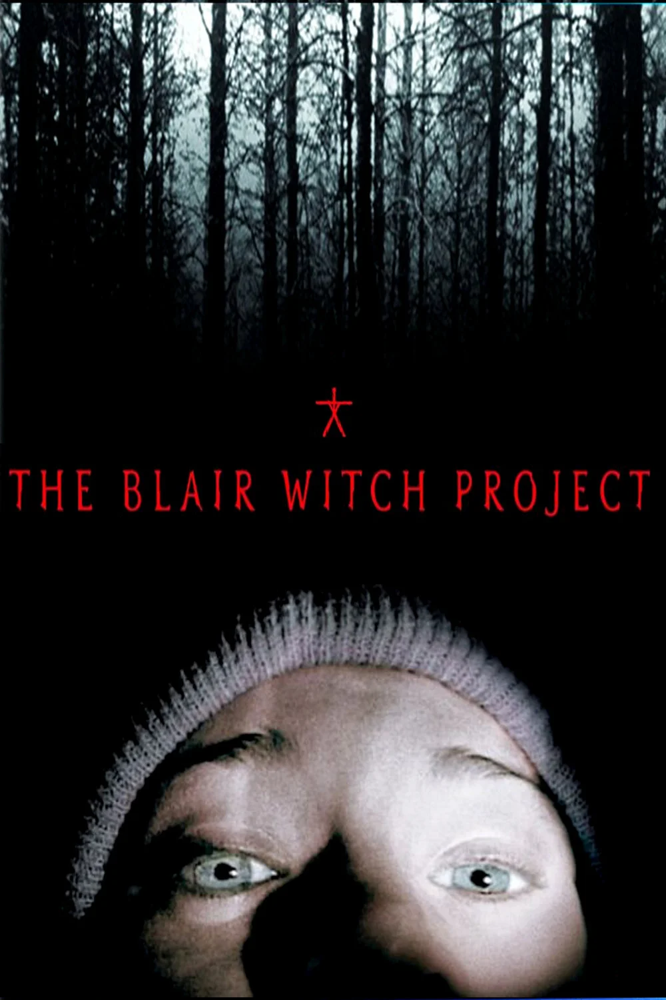
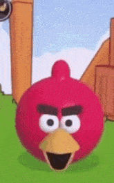

Les films à l'affiche chez CinéLyon

Durant le voyage de retour d'un immense cargo spatial en mission commerciale de routine, ses passagers, cinq hommes et deux femmes plongés en hibernation, sont tirés de leur léthargie dix mois plus tôt que prévu par Mother, l'ordinateur de bord. Ce dernier a en effet capté dans le silence interplanétaire des signaux sonores, et suivant une certaine clause du contrat de navigation, les astronautes sont chargés de prospecter tout indice de vie dans l'espace.
Élisabeth Vogler est actrice. Au beau milieu d'une interprétation d'Électre, elle devient muette. Des médecins l'auscultent et ne décèlent aucune anomalie physique. Une infirmière, Alma, la prend en charge, l'emmenant dans sa villa au bord de la mer. Puisque l'actrice ne parle plus, Alma discourt pour deux, confiant à Élisabeth les secrets qui la rongent : une expérience sexuelle à plusieurs, son avortement, sa solitude.

Le 21 octobre 1994, 3 étudiants de cinéma vont dans la forêt de Black Hills, dans le Maryland, pour faire un documentaire sur une légende locale : la sorcière de Blair. Un an plus tard, leur bande vidéo est retrouvée. Eux sont toujours portés disparus.

Une application d'enfance oubliée devient un cauchemar numérique. Face à un avatar défaillant qui refuse de se taire, le joueur assiste à la mutation d'un simple jouet en un témoin du vide. Une horreur minimaliste sur l'obsolescence et la décomposition du code.
{kind=link}
{kind=link}
{kind=link}
{kind=link}